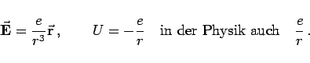
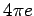
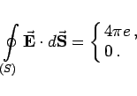

Inhalt Index DeskTop Bronstein

 Vektoranalysis und Feldtheorie Berechnung von Feldern Vektorfelder mit punktförmigen Quellen
Vektoranalysis und Feldtheorie Berechnung von Feldern Vektorfelder mit punktförmigen Quellen


Das COULOMB-Feld ist ein wichtiges Beispiel für ein wirbelfreies Feld, das überall, ausgenommen den Ort der Punktladung, den Quellort, auch solenoid, d.h. quellenfrei ist (s. Abbildung).

Die COULOMB-Kraft FC wirkt anziehend für Ladungen q1,q2 mit ungleichem Vorzeichen, abstoßend für gleiche Vorzeichen.
Die Feld- und die Potentialgleichungen lauten:
|  | (13.128a) |
Der skalare Fluß ist  bzw. 0, je nachdem, ob die Fläche S eine Quelle e einschließt oder nicht:
|  | (13.128b) |
Die Größe e wird Ergiebigkeit oder Intensität der Quelle genannt.